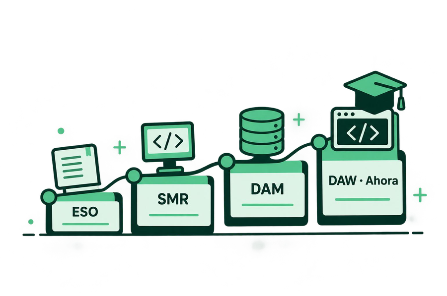
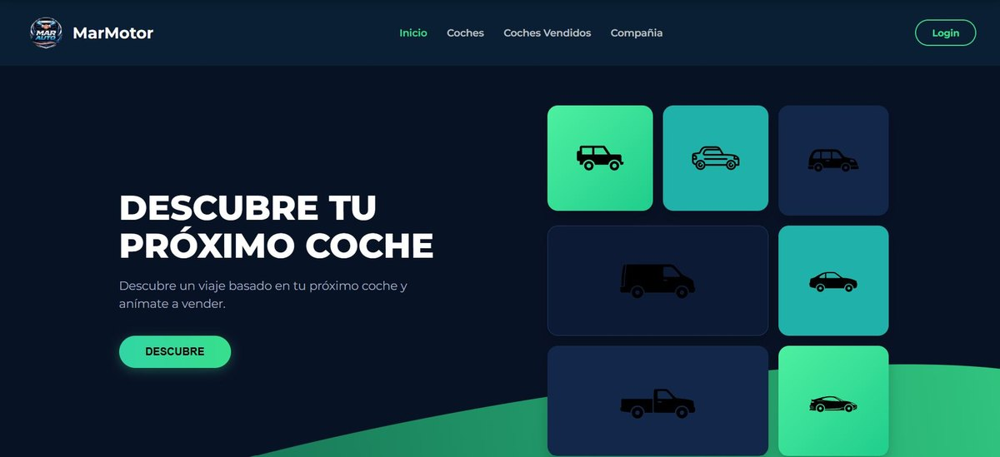

Tecnologías
Tecnologías y herramientas: Java · JavaScript · PHP · Kotlin · Python · SQL · HTML5 · CSS3 · Spring Boot · Git · GitHub · GitLab · API REST.
Mis estudios desde el inicio
Llevo cinco años en el instituto: de SMR a DAM y, ahora, a DAW. Aquí comparto una mirada al centro desde mi recorrido como alumno.

Proyecto para mi TFG - https://marmotor.vercel.app/
Proyecto en equipo MarMotor (TFG - DAM) - Desarrollé el apartado API REST, JWT y conexión a MySQL con Java 17 y Spring Boot

Y como me va a servir en el futuro
Tecnologías y herramientas: Java · JavaScript · PHP · Kotlin · Python · SQL · HTML5 · CSS3 · Spring Boot · Git · GitHub · GitLab · API REST.
En un futuro espero poder trabajar como desarrollador de software.